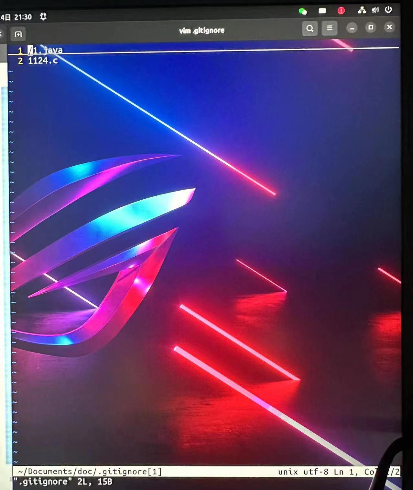
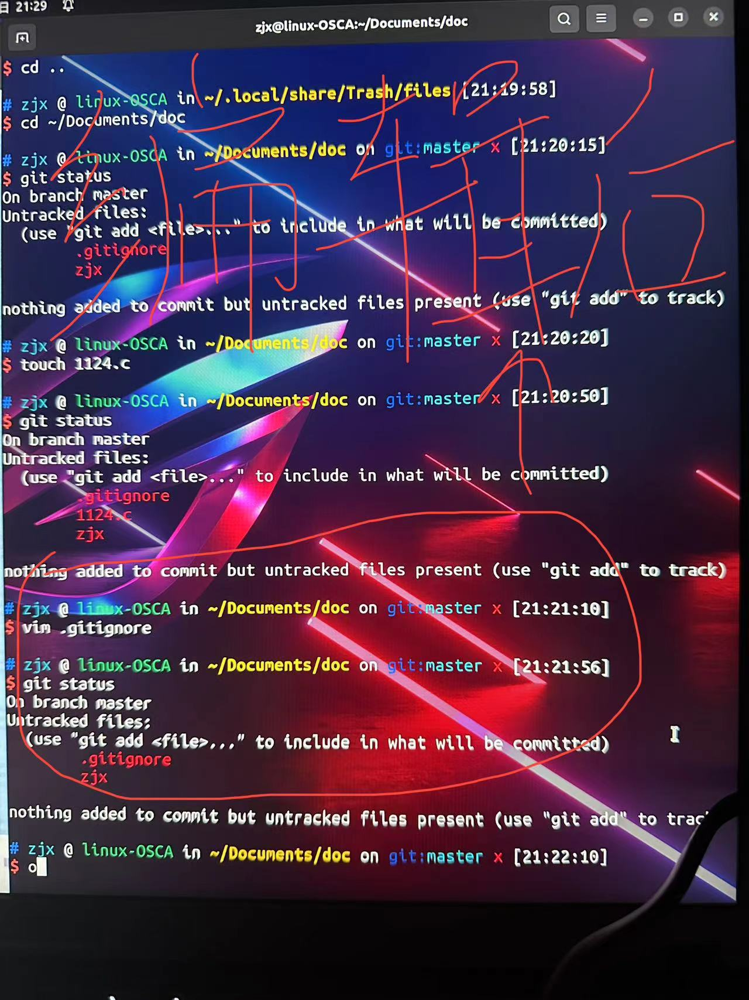
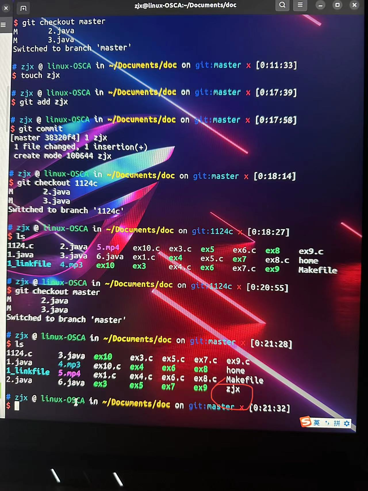

git快速入门
报告者：张佳昕
2023-12-10
门牌号
内部交流，请勿外传
git作用简介:
- 想象一下你正在写代码, 你今晚的目标是实现某一个新功能, 不然就不睡觉. 经过千辛万苦，你终于把代码写好了, 保存并编译运行, 你看到调试信息一行一行地在终端上输出. 就要看到成功的曙光的时候, 竟然发生了段错误! 你仔细思考, 发现你之前的构思有着致命的错误，但之前正确运行的代码已经永远离你而去了。你悲痛欲绝, 绝望地倒在屏幕前...
- 如果你会使用git就可以避免以上悲剧的发生。git是分布式版本控制系统。git具有游戏存档一样的功能，能够让你在过去和未来中随意穿梭, 避免构思错误的悲剧降临你的身上。
git快速入门、
1.在Ubuntu上下载安装git的命令：
sudo apt-get install git
2.安装后的配置命令:
1|git config --global user.name "Zhang San" # your name
2|git config --global user.email "zhangsan@foo.com" # your email
3|git config --global core.editor vim # your favourite editor
4|git config --global color.ui true
3.下载实验提供的框架代码：
git clone 如果想在别的实验/或者项目中使用git，应该先进行初始化： git init
4.查看目前所有的存档：
命令：git log 第一次使用这个命令，内容应该为空。接下来我会叫大家如何存档
5.查看所有已跟踪文件的命令（已跟踪的文件是存档文件的前身）：
git status 查看是否有新的文件或已修改的文件未被跟踪, 若有, 则使用 git add 将文件加入跟踪列表, 例如 git add filename 想要一次性添加所有当前目录下的文件，你可以使用： git add -A
但这样会出现弊端，它会将很多不必要的文件也进行跟踪，第一个就是不需要使用的文件，第二个就是因为编译而产生的可执行的二进制文件（binary文件）编译后的binary文件其实是比较大的，要比源码大很多。其实只需要上传源代码即可。
6.接下来介绍一种可以忽略你不需要跟踪的文件的方法——使用gitignore文件：
在gitignore文件里的文件名，会被跟踪忽略 a.首先需要在你的工作区(项目的根目录)下建立一个名称为gitignore的文件，然后把想要忽略的文件名填进去，这样在git status和git add就会自动忽略在.gitignore中的文件名
命令1： touch .gitignore #隐藏文件 .gitignore（linux下以.开头的文件都是隐藏文件）
b.然后用vim打开文件进行编辑：
将你不想跟踪和存档的文件写入此文件当中,就像我写的1124.c

接下来演示一下忽略的效果：

在我用vim编辑了gitignore文件后，可以看出1124.c文件没有了，它被隐藏在了.gitignore当中
其实也可以忽略一类文件
*.xml
*.log
*.apk
*.c
*表示匹配0个或多个任意字符
7.学会了跟踪之后，再加一个命令就可以实现存档了：
git commit #将跟踪文件进行存档
8.读档:
首先使用git log来查看已有的存档，并决定你需要回到哪个过去，每一份存档都有一个hash code ，例如b87c2324525wr21243242,你需要通过hash code来告诉git你希望都哪一个档，使用以下命令进行读档： git reset –hard b87c 其中b87c上文hash code的前缀: 你不需要输入整个hash code. 这时你再看看你的代码, 你已经成功地回到了过去！
你需要再三确认选择的存档是不是你的真正目标. 如果你读入了一个较早的存档, 那么比这个存档新的所有记录都将被删除! 这意为着你不能随便回到"将来"了.
但是方法总比困难多，git分支可以避免这些问题的出现
9.git分支
使用git分支就可以在不同的时间节点之间来回随意穿梭，你可以以你存档的那个节点作为主分支，在此基础上不断开设新的分支，用来记录你在主分支基础上更新的内容，因为你可以在分支之间反复横跳，所以你就可以来回穿梭于在主存档（主分支基础上）的各个时间节点（分支）。 那么该如何建立分支呢?
以我的407a存档为例演示 a.首先使用以下命令进行读档： 'git checkout 407a' #进入虚构的分支当中 b.使用命令进入主分支： 'git checkout master' #进入主分支
然后你可以使用命令来建立多个分支：
'git branch branchname' #建立一个新的分支
跳转不同分支的命令：
'git checkout branchname' #跳转到指定分支 我们为什么要建立那么多的分支呢？
接下来我用一个实际的例子来解释为什么要使用分支
1.首先我使用git checkout master进入了主分支
2.然后我再虚构分支中，找一个文件进行内容修改，比如我再zjx空文件写入了zjx666并保存，这个保存与存档一样，需要输入存档命令的
1|git add zjx
2|git commit
接下来就是见证奇迹的时刻了

我在master主分支进行了编辑操作，当我使用命令进入1124c分支后，甚至连zjx这个文件都没有。 这说明了一个道理，各个分支直接相互独立，互不干涉，这样你就可以随时进入各个时间节点，就像平行时空一样！

讨论 5-10min
谢谢 Thanks 2023-12-10 门牌号 内部交流，请勿外传